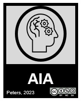

MAT-2904 : Complément d’analyse
Présentation
Bienvenue sur un site web complémentaire au site monPortail du cours MAT-2904 : Complément d’analyse, à l’Université Laval.
Ce site contient principalement des séries d’exercices conçues pour accompagner les étudiants et étudiantes dans le cours. Chaque série d’exercices est soigneusement élaborée pour approfondir votre compréhension des concepts clés et vous préparer aux évaluations.
Les fonctions exponentielles et logarithmiques
Ce document vous invite à explorer en profondeur les fonctions exponentielles et logarithmiques, des outils mathématiques essentiels tant en théorie qu’en applications pratiques. À travers onze exercices soigneusement structurés, vous allez découvrir les multiples facettes de ces fonctions.
Nous commençons par des exercices techniques de résolution d’équations exponentielles, avant d’aborder des problèmes plus théoriques qui vous feront découvrir les propriétés fondamentales de la fonction exponentielle, notamment son unicité comme solution de l’équation différentielle f’=f.
Le document intègre également des applications concrètes avec des problèmes d’intérêts composés et de croissance de populations bactériennes, illustrant ainsi l’utilité pratique de ces fonctions.
Nous terminons par une exploration rigoureuse de la définition du nombre e, démontrant comment ce nombre fondamental émerge naturellement des limites de suites. Les solutions détaillées vous guideront à travers les raisonnements mathématiques nécessaires pour maîtriser ces concepts clés de l’analyse mathématique.
Les fonctions puissances
Ce document vous propose une exploration approfondie des fonctions puissances, un concept fondamental en analyse mathématique. À travers onze exercices progressifs, vous allez consolider votre compréhension des propriétés algébriques et analytiques de ces fonctions.
Nous commençons par établir les propriétés fondamentales des puissances en utilisant la définition \(x^{\alpha} = e^{\alpha \log x}\), puis nous abordons des questions plus subtiles comme la rationalité des puissances de nombres irrationnels.
Le document vous guide ensuite vers l’étude des dérivées des fonctions puissances, avec une attention particulière portée à l’analyse complète de la fonction racine cubique.
Les exercices culminent avec des applications pratiques :
- Calcul de limites
- Résolution d’équations et d’inéquations
- Calcul d’intégrales faisant intervenir des puissances réelles
Chaque exercice est accompagné d’une solution détaillée et, lorsque pertinent, de représentations graphiques pour faciliter votre compréhension.
L’intégrale de Riemann
Ce document vous propose une série d’exercices approfondis sur l’intégrale de Riemann, un concept fondamental en analyse mathématique. Vous y trouverez six questions (incluant plusieurs sous-questions) qui vous permettront de maîtriser différentes techniques d’intégration et de comprendre leurs applications.
La première partie vous invite à pratiquer l’intégration indéfinie à travers douze cas différents, chacun nécessitant des techniques spécifiques comme :
- Les changements de variables
- L’intégration par parties
- La décomposition en fractions partielles
Les exercices suivants vous amènent vers des concepts plus avancés :
- Le calcul d’intégrales définies, y compris avec des bornes infinies
- Le calcul d’aire entre des courbes
- Une démonstration rigoureuse par la méthode de Riemann
- Des questions plus théoriques sur les propriétés des fonctions impaires dans l’intégration
Chaque exercice est accompagné d’une solution détaillée qui vous permet de comprendre pas à pas la méthode de résolution.
Les fonctions hyperboliques
Dans cette série d’exercices sur les fonctions hyperboliques, nous explorons d’abord les fonctions de base sinh, cosh et tanh, en mettant l’accent sur leurs graphiques et leurs propriétés fondamentales. Une attention particulière est portée à la fonction tanh et sa réciproque arctanh, où nous démontrons notamment la formule importante reliant arctanh(x) au logarithme naturel. Les graphiques sont systématiquement tracés pour visualiser le comportement de ces fonctions.
La série progresse ensuite vers des aspects plus théoriques avec la démonstration d’identités hyperboliques importantes, comme la formule d’addition pour cosh(x+y). Ces identités sont suivies d’exercices de résolution d’équations impliquant sinh et cosh, montrant comment ces fonctions sont interconnectées par des relations fondamentales comme cosh²(x) - sinh²(x) = 1. Une partie intéressante de la série est consacrée à la comparaison graphique de sinh et cosh, nous permettant de mieux comprendre leurs comportements respectifs.
La série se termine par une application concrète et fascinante : l’étude de la chaînette, qui représente la forme que prend un câble suspendu sous son propre poids. Ce problème pratique nous montre comment les fonctions hyperboliques apparaissent naturellement dans des situations physiques réelles, illustrant ainsi leur importance au-delà des mathématiques pures.
Licence et attributions
Ce site et son contenu sont mis à disposition sous licence Creative Commons Attribution - Pas d’Utilisation Commerciale (CC BY-NC).
Vous êtes libre de :
- Partager, copier et redistribuer le contenu
- Adapter et transformer le contenu
À condition de :
- Créditer la source en citant l’auteur du présent document avec un lien vers ce site
- Ne pas faire d’usage commercial du contenu
Une partie du code présenté sur ce site a été généré avec l’assistance de l’intelligence artificielle Claude (Anthropic), tout en étant vérifié et adapté pour garantir son exactitude et sa pertinence pédagogique.

